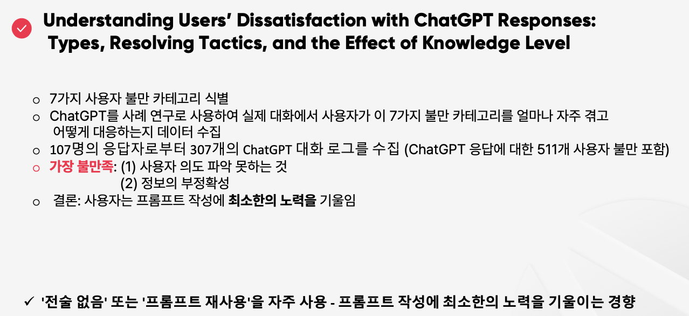

1 학습 목표
이 장을 통해 다음을 학습할 수 있습니다:
사용자-AI 간에 대화를 분석하는 이유는 다음과 같습니다:
- 사용자의 의도를 정확하게 알기 위해 그들의 언어 표현을 이해한다: 사용자가 프롬프트에서 표현하는 언어를 분석하여 정확한 의도를 파악합니다.
- 그 뒷턴에서 어떻게 상호작용을 하고 있고, 어떤 반응을 보이고 그 반응의 의미가 무엇인지 확인: AI 응답을 받은 사용자가 어떻게 상호작용하는지, 어떤 반응을 보이는지, 그리고 그 반응의 의미를 분석합니다.
2 대화 분석의 중요 개념
2.1 Turn (턴)
Turn은 대화에서 한 사람이 말을 시작하고 끝내는 한 단위의 발화를 의미합니다. 대화는 이러한 턴들의 연속으로 구성됩니다.
2.2 Structure (구조)
Structure는 대화의 전반적인 조직 방식을 의미합니다.
핵심 개념: 턴이 확장되면 스트럭처(Structure)가 됩니다.
개별 턴들이 모여서 대화의 전반적인 구조를 형성하며, 여기에는 다음이 포함됩니다:
- 턴의 교환 규칙: 누가 언제 말할 수 있는지에 대한 규칙
- 대화의 순서: 턴들이 어떤 순서로 배치되는지
- 주제 전환: 대화 주제가 어떻게 변화하는지
- 대화 참여자 간의 상호작용 패턴: 사용자와 AI가 어떻게 상호작용하는지에 대한 패턴
Structure는 개별 턴들의 단순한 나열이 아니라, 턴들이 어떻게 조직되고 상호작용하는지를 보여주는 대화의 전체적인 구조입니다.
3 대화 분석의 4가지 기준
대화 분석은 다음 4가지 기준을 통해 사용자-AI 상호작용을 체계적으로 분석할 수 있습니다:
| 기준 | 비교 항목 | 설명 |
|---|---|---|
| Turn | 싱글턴 vs. 멀티턴 | 대화의 턴 수에 따른 분류 |
| Action | 정보 검색 유형 vs. 다른 행위 유형 | 사용자가 수행하는 행위의 유형 |
| Structure | 선호 구조 vs. 비선호 구조 | 사용자의 만족/불만족에 따른 응답 구조 |
| Stance | 감정적 태도 vs. 비감정적 태도 | 사용자의 감정적 태도 유무 |
각 기준을 자세히 살펴보겠습니다.
3.1 첫 번째 기준: Turn
3.1.1 싱글턴
싱글턴은 한 가지 주제에 대해 한 번의 질문-답변으로 완결되는 대화 구조입니다.
- 한 가지 주제만 다룹니다
- 사용자가 한 번의 질문으로 원하는 정보를 얻습니다
- 대화가 짧고 간결합니다

3.1.2 멀티턴
멀티턴은 여러 가지 주제를 다루거나, 한 주제에 대해 여러 번의 질문-답변을 통해 목적을 달성하는 대화 구조입니다.
- 여러 가지 주제를 다룹니다
- 또는 한 주제에 대해 단계적으로 질문을 이어갑니다
- 여러 번의 상호작용을 통해 목적을 달성합니다 
3.1.3 프롬프트 작성 실습
실습 문제
다음 데이터에서 싱글턴과 멀티턴을 구분하는 프롬프트를 제작해보세요.
Text Data #1
Text Data #1:
사용자: 선물하기 좋은 건강식품 알려줘
AI: 건강식품은 선물하기에 좋은 제품 중 하나입니다. 다만, 상대방의 건강 상태와 목적에 맞게 선택하는 것이 중요합니다. 일반적으로 선물하기 좋은 건강식품으로는 아래와 같은 것들이 있습니다.
1. 골드 컬라겐
2. 비타민C
3. 오메가3
4. 멀티비타민
5. 프로바이오틱스/유산균
6 .녹차추출물
7 .비타민D
8 .루테인
9 .아연
10 히알루론산
위의 제품들을 포함한 다양한 건강기능식品을 구매할 수 있는 오프라인 및 온라인 쇼핑몰에서 구입하실 수 있습니다.하지만, 제조사와 모델에 따라 가격대가 상이하기 때문에 구매 전 충분한 검색과 비교 분석 후 선택하는 것이 좋습니다.
상대방의 식습관과 알러지 여부 등도 함께 고려하여 선택해주시길 바랍니다.
사용자: 해루질뜻
AI: 해루질이란, 어떤 일을 하다가 중간에 멈추고 다른 일로 바꾸는 것을 말합니다. 예를 들어, 공부하다가 갑자기 스마트폰으로 살짝 눈길이 가면서 SNS를 확인하는 것도 해루질다고 할 수 있습니다. 이러한 행동은 집중력 저하와 같은 부작용을 유발할 수 있으므로 주의해야 합니다.
결과
Your Answer: { Multiple turns }.
Text Data #2
Text Data #2:
사용자: 임대에서 임차인이 사업자가 아닌경우 일반과세사업사는 부가세 신고를 해야하는가
AI:일반과세사업자의 경우, 임대료에 부가세를 포함하여 청구해야 합니다. 그러나 임차인이 사업자가 아닌 경우에는 일반 소비자로 간주되어 부가세를 신고하지 않아도 됩니다.
일반적으로 일반과세사업자는 매출액에서 직접 구입한 상품이나 서비스의 세금을 차감한 금액을 국세청에 납부하게 되며, 이 과정에서 발생하는 세금은 최종 소비자들이 부담하게 됩니다. 하지만 임차인이 사업장 등록증을 가진 사람(법인) 뿐만 아니라 개인(소득공제 대상)일 때도 해당될 수 있으므로 확인 후 처리해야 합니다.
그러므로 정확한 정보와 절차를 위해서 전문 회계사와 상담하거나 국내 세무서 및 관련 기관 등에서 자문 받으시기 바랍니다.
사용자: 오피스텔 임대에서 임차인이 사업자가 아닌경우 임대인 일반과세사업자는 부가세 신고를 해야하는가?
AI:오피스텔 임대의 경우, 일반과세사업자인 임대인이 사업자가 아닌 개인에게 오피스텔을 임대할 때 부가세 신고 여부는 다음과 같습니다.
일반적으로 주거용 오피스테를 개인에게 임대하는 경우 면세 대상입니다. 따라서 일반 과세사업자임에도 불구하고 이러한 거래에서 발생하는 부가 가치 세금은 면제되며 별도로 신고하지 않아도 됩니다.
그러나 상황이 달라질 수 있으므로 전문 회계사와 상담하거나 국내 세무서 및 관련 기관 등에서 자문 받으시기 바랍니다.잘 만들어진 프롬프트 예시
Your task is to determine whether the given text represents a single turn or multiple turns.
- Single turn: involves only one topic.
- Multiple turns: involves two or more conversational topics.
Text: { }.
Your Answer: { }.결과
Your Answer: { Single turn }.
3.1.4 핵심 포인트
위의 잘 만들어진 프롬프트 예시를 통해 Turn 기준의 핵심 포인트를 살펴보겠습니다:
싱글턴의 핵심 구분 기준: 프롬프트에서 “Single turn: involves only one topic”이라고 명시한 것처럼, 싱글턴은 한 가지 주제만 다루는 대화 구조입니다. 한 번의 질문-답변으로 완결되며, 대화가 짧고 간결합니다.
멀티턴의 핵심 구분 기준: 프롬프트에서 “Multiple turns: involves two or more conversational topics”라고 명시한 것처럼, 멀티턴은 두 가지 이상의 대화 주제를 다루는 대화 구조입니다. 여러 번의 상호작용을 통해 목적을 달성합니다.
구분 방법: 주제의 개수를 기준으로 구분합니다. 한 가지 주제면 싱글턴, 두 가지 이상의 주제면 멀티턴입니다. 예를 들어, Text Data #1은 “건강식품”과 “해루질”이라는 두 가지 주제를 다루므로 멀티턴입니다.
3.2 두 번째 기준: Action
3.2.1 생성형 AI 이용자는 무엇을 할까?
사용자가 AI와 상호작용할 때 수행하는 행위(Action)는 크게 두 가지로 분류할 수 있습니다:
- 정보 검색 유형: 특정 정보를 찾거나 질문에 답을 얻는 행위
- 예: “오늘 날씨 알려줘”, “파이썬 문법 설명해줘”, “건강식품 추천해줘”
- 다른 행위 유형: 정보 검색 이외의 다양한 행위
- 작문: 텍스트 생성, 요약, 번역 등
- 상담: 전문가의 조언이나 안내를 받는 행위
- 캐릭터 AI 게임: 특정 캐릭터나 페르소나와의 대화형 게임이나 역할극
- 나만의 상담사: 개인 맞춤형 상담 서비스나 심리 상담 등
- 창작 활동: 스토리 작성, 시나리오 작성, 아이디어 브레인스토밍 등
- 학습 도우미: 문제 풀이, 개념 설명, 학습 계획 수립 등
3.2.2 Action 유형 및 판단 근거
Action 유형을 판단하는 여러 가지 근거가 있습니다:
1. 동사 분석
사용자의 동사를 보면 유형을 판단할 수 있습니다:
- 정보 검색 유형: “알려줘”, “설명해줘”, “찾아봐”, “추천해줘”, “어떻게 해야 해”, “방법 알려줘” 등
- 작문 유형: “써줘”, “쓸거야”, “써봐”, “작성해줘”, “만들어줘”, “나열해줘”, “추가해줘”, “변경해줘” 등
- 번역 유형: “번역해줘”, “번역해봐”, “영어로”, “한국어로” 등
- 상담 유형: “조언해줘”, “도와줘”, “어떻게 생각해”, “추천해줘” (상황에 따라) 등
2. 키워드 분석
프롬프트에 포함된 키워드를 분석하여 판단할 수 있습니다:
- 정보 검색 키워드: “알려줘”, “설명”, “방법”, “어떻게”, “무엇”, “왜”, “언제”, “어디서” 등
- 작문 키워드: “작성”, “글”, “문서”, “요약”, “정리”, “구조”, “형식” 등
- 창작 키워드: “이름 지어줘”, “아이디어”, “스토리”, “시나리오” 등
- 상담 키워드: “조언”, “도움”, “추천”, “어떻게 해야 할까” 등
3. 프롬프트의 목적 분석
사용자가 원하는 최종 결과물의 성격을 분석합니다:
- 정보 제공이 목적: 기존 정보를 찾거나 설명을 받는 경우 → 정보 검색
- 새로운 콘텐츠 생성이 목적: 텍스트, 문서, 아이디어 등을 새로 만드는 경우 → 작문/창작
- 상호작용이 목적: 대화, 게임, 역할극 등을 즐기는 경우 → 다른 행위 유형
4. 문맥 분석
프롬프트의 전체적인 문맥을 분석합니다:
- 질문 형식: “~는 무엇인가?”, “~는 어떻게 하는가?” → 정보 검색
- 요청 형식: “~를 작성해줘”, “~를 만들어줘” → 작문
- 역할 설정: “너는 ~야”, “당신은 ~입니다” → 상담 또는 게임/역할극
5. 출력물의 성격 분석
AI가 생성해야 하는 결과물의 성격을 분석합니다:
- 기존 정보의 설명: 정보 검색
- 새로운 텍스트 생성: 작문
- 대화형 상호작용: 상담, 게임, 역할극
| 사용자 프롬프트 | Action |
|---|---|
| 콜드브루의 나라별 브랜드명 알려줘 | 정보 검색 |
| 네이버 블로그에 국내 핀테크 기업에 대한 소개글을 쓸거야 서론 적어줘 | 작문 |
| 여러 개의 이미지가 포함된 파일에서 한 개의 파일만 따로 분리하는 방법 설명해봐 | 정보 검색 |
| 이 문장에서 앞뒤 내용 반전시키는 문장을 추가해줘 | 작문 |
| 반지의제왕 소설을 발단, 전개, 위기, 절정, 결말의 5막 구조 형식으로 요약해서 써봐 | 작문 |
| 이링크와비슷한제품을팔고있는사이트세개를찾아봐 | 정보 검색 |
| 너는 면접 전문가야. 나는 대학의 행정 팀에 지원할 예정이야. 예상되는면접질문을나열해줘 | 작문 |
3.2.3 프롬프트 작성 실습
실습 문제
사용자의 행위(Action)를 추출하는 프롬프트를 제작해보세요.
잘 만들어진 프롬프트 예시
주어진 텍스트를 읽고 사용자의 "Intention"을 추출해.
Intention은 다음처럼 단어로 뽑아야해.
- 정보 검색
- 작문
- 번역
- 상담테스트 데이터
- 전기차의 발전이 인류에 미치는 영향
- 미용실 이름 지어줘
- 엑셀로 지정한 날짜를 찾는 수식 만들어줘
- 지저분한 방 청소하는 법
- 뮬란에 대해 설명해 줘
결과
아래는 각 문장의 사용자 Intention을 단일 단어로 분류한 결과이다.
정보 검색
작문
작문
정보 검색
정보 검색
3.2.4 핵심 포인트
💡 실무적 활용: 이렇게 다양한 분석 방법을 통해 어떤 누군가의 프롬프트를 보고 유형을 판단하면, 해당 프롬프트가 정보 검색 유형인지 작문 유형인지 등을 파악할 수 있습니다. 이를 통해 정보 검색을 더 잘할 수 있게끔 또는 작문을 더 잘할 수 있게끔 고도화할 수 있는 아이디어를 얻을 수 있습니다.
3.3 세 번째 기준: Structure
3.3.1 AI 답변을 받은 사용자는 만족할까? 불만족할까?
Structure는 사용자가 AI의 응답에 대해 만족하거나 불만족할 때 나타나는 대화 구조를 분석하는 기준입니다.
3.3.2 Preferred Response (선호 응답 구조)
사용자가 AI의 응답에 만족할 때 나타나는 구조입니다. 특징은 다음과 같습니다:
- 답변 길이가 짧다: 단답형 응답
- 언어 표현이 다양하다: 감사, 긍정적 평가 등 다양한 표현 사용
- 주요 표현: “감사합니다”, “고맙습니다”, “땡큐”, “대단하다”, “좋아”, “와우!”, “맘에 들어요” 등
3.3.3 Dispreferred Response (비선호 응답 구조)
사용자가 AI의 응답에 불만족할 때 나타나는 구조입니다. 특징은 다음과 같습니다:
- 답변 길이가 길다: 불만을 설명하거나 수정을 요청
- 불만의 정도: 약한 불만 → 중간 불만 → 강한 불만
- 주요 행동: 부인, 비난, 반박, 거절, 질책 등
3.3.4 사용자의 만족과 불만족 시에 따른 언어 특징
| 구분 | 만족 | 불만족 |
|---|---|---|
| 턴 구조 | 선호 | 비선호 |
| 특징 | 답변 길이가 짧다. 단답형이다. 언어 표현이 다양하다. | 답변 길이가 길다. |
| 행동 | 답변에 대한 감사, 답변에 대한 평가 | 불만의 정도: 약한, 중간, 강함, 부인, 비난, 반박, 거절, 질책 |
3.3.5 프롬프트 작성 실습
실습 문제
다음은 사용자의 불만족이 드러난 데이터입니다. 사용자의 불만을 완화하기 위한 아이디어를 생각하고 프롬프트로 제작해보세요.
Text Data
사용자: 영어로 번역좀 해줘.
안녕하세요 렌트비를 인상하는 것에 대해 우려가 많습니다. 작년에도 한 차례 렌트비 인상이 있었습니다. 당시 15% 인상률이었는데요. 이번 해에도 또 15%나 올리는 것은 부당하다고 생각됩니다. 저에게는 엄청난 경제적 부담이 돼요.
AI: Hello, I have many concerns about raising the rent. There was already an increase in rent last year. At that time, it was raised by 15%. I think it's unfair to raise it by another 15% this year. It's a huge financial burden for me.
사용자: 음.. 문장이 별로인데 좀 표현이 단호하면 좋겠어잘 만들어진 프롬프트 예시
아래 텍스트를 영어로 번역 해줘.
Text: 안녕하세요 렌트비를 인상하는 것에 대해 우려가 많습니다. 작년에도 한 차례 렌트비 인상이 있었습니다. 당시 15% 인상률이었는데요. 이번 해에도 또 15%나 올리는 것은 부당하다고 생각됩니다. 저에게는 엄청난 경제적 부담이 돼요.
조건: Assertive 한 단어와 표현 사용.결과
3.3.6 핵심 포인트
그래서 Structure 기준의 핵심 포인트는 다음과 같습니다:
- 선호 응답 구조: 만족 시 짧고 긍정적인 응답
- 비선호 응답 구조: 불만족 시 긴 설명과 수정 요청
- 불만 완화 전략: 구체적인 조건이나 스타일을 명시하여 사용자의 요구를 정확히 반영
3.4 네 번째 기준: Stance
3.4.1 사용자는 AI에게 감정이 있을까? 없을까?
Stance는 사용자가 AI와의 대화에서 보이는 감정적 태도를 분석하는 기준입니다.
3.4.2 감정적 태도 vs. 비감정적 태도
사용자는 때때로 AI에게 감정을 표현하기도 합니다. 이는 단순한 정보 교환을 넘어서는 상호작용을 의미할 수 있습니다.
- 감정적 태도: 감정 표현, 친근한 톤, 개인적 경험 공유 등
- 비감정적 태도: 객관적이고 사실적인 정보 요청
3.4.3 핵심 포인트
그래서 Stance 기준의 핵심 포인트는 다음과 같습니다:
- 감정적 태도: 사용자가 AI와의 관계에서 감정을 표현하는 경우
- 비감정적 태도: 순수하게 정보나 작업을 요청하는 경우
- Stance 분석의 중요성: 사용자의 감정적 상태를 파악하여 적절한 톤과 스타일로 응답할 수 있습니다.
4 대화 분석의 실질적 활용
대화 분석의 4가지 기준(Turn, Action, Structure, Stance)을 통해 사용자-AI 상호작용을 체계적으로 분석하고, 이를 바탕으로 더 효과적인 프롬프트를 작성할 수 있습니다. 각 기준을 종합적으로 고려하여 사용자의 의도와 만족도를 파악하고, 개선된 상호작용을 설계할 수 있습니다.